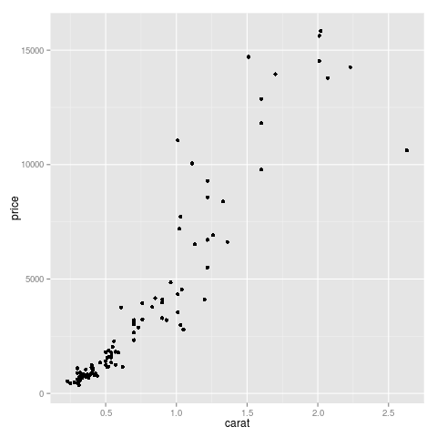

Org-mode and R: An Introduction
Table of Contents
- Introduction
- Setting up Org-mode for source code evaluation
- Org-mode source code blocks
- Passing data between code blocks
- Inserting R graphical output
- Inserting LaTeX output
- Putting it all together, a notebook interface to R
- Tangling code
- Exporting documents containing code and results
- Where to go from here?
Org-mode support for R

This is an introduction to using R (http://www.R-project.org) source
code within Emacs Org-mode (http://orgmode.org). Org-mode files use
headlines to organize information. Each top-level headline in this
document starts with a single '*', like the "Introduction" headline
below. While this is not an introduction to using Org-mode, you will
need to know one command to proceed: use the TAB key on a headline
to open it. TAB will cycle through the possible visibility states of
the information under the headline, and eventually TAB will collapse
the headline back to how you see it now. One last command to note:
C-c C-o opens links like those above in your web browser.
If you are following along in Org-mode, instead of reading this in an
exported format like HTML or PDF, you will need Org-mode 7.9.3e or
greater to go interact with this tutorial. See here for instructions
on how to download the latest version of Org-mode. To see what version
of Org-mode you have installed, type M-x org-version, and hit
<ENTER>. The result will be in the minibuffer. If the version is
anything less than 7.9.3, you'll need to update to run the
examples. If you have an older version of Org-mode but just want to
read about the possibilities, you can continue on.
Introduction
Emacs Org-mode has an exciting feature that lets you submit source code blocks within an Org-mode document for evaluation. This lets you do things like insert the results of R code into an Emacs buffer, insert graphical and tabular material into a buffer, or pass the results of R code to other programming languages such as Python. R code and results can be included in your exported Org-mode documents, opening up several interesting possibilities for automatically generating comprehensive documentation and advanced reports. You can also extract the source code portions of an Org-mode document for further processing through a process called tangling. This tutorial will get you started using these Org-mode features together with the R programming language.
If you are unfamiliar with Org-mode itself, you can learn a lot more from the project's website. There are many good tutorials available on Org-mode already. The compact guide is a great place to start. This current document focuses on source code support. Note that while the features being demonstrated in this document were being developed, the project was known as org-babel. Thus, many of the variables and function names reference 'org-babel' in their names. Org-babel is now distributed with Org-mode, so many of the previous configuration hurdles are now avoided. Keep this in mind as you read old mailing list posts and documentation. The authors of org-babel are Eric Schulte and Dan Davison. They have worked very hard creating this amazing system!
Although you may be viewing this tutorial in an exported format like HTML or PDF, the tutorial was written in Org-mode. You will benefit most from it by following along in Org-mode. Only then can you interactively evaluate the examples to see Org-mode in action. For this reason, you should download the actual org mode file that this document is based on, visit the file in Emacs, and follow along there.
For those following along in an exported version, such as HTML, in the actual Org-mode file, source code blocks look like this:
#+BEGIN_SRC R
# some R code
square <- function(x)
{
x * x
}
square(1:10)
#+END_SRC
However, when they are exported into documents like this they will look like:
# some R code square <- function(x) { x * x } square(1:10)
It's something to be aware of when following along from an exported version such as HTML, since we will be referencing source code block arguments that you will not be able to see. That is another very good reason to follow along with the raw org mode file.
This tutorial was written in GNU Emacs 24.3.50.1 (i686-pc-linux-gnu, GTK+ Version 3.6.0) of 2013-01-28 on actinium, modified by Debian, on Ubuntu 12.10, Org-mode version 7.9.3e (7.9.3e-1175-g3e95e8), pulled directly from the Org-mode git repository.
System Prerequisites for this tutorial
First, we need to make sure our environment is setup correctly for the examples to run. This requires a bit more work under Windows than others; see below.
Here is a list of software we need to run the examples:
- Org-mode 7.9.3e or greater, see http://orgmode.org.
- A working R installation, see http://www.R-project.org.
- The R examples use the
ggplot2andHmiscpackages from CRAN. Simply install from the R command line by issuing the command> install.packages(c("ggplot2", "Hmisc")). R must be in yourPATHenvironment variable. For Windows users, you will probably have to add this yourself.
For LaTeX support,
- a working LaTeX installation, see http://latex-project.org. Windows users can use MikTeX.
dvipngprogram (comes with MikTeX or thetexlive-fullUbuntu package)- Some extra LaTeX packages (comes with the
texlive-fullUbuntu package). On an Ubuntu 12.10 installation you may need to install thetexlive-latex-extraandtexlive-fonts-recommendedpackages to get the LaTeX documents that Org-mode produces to compile. You can get both of these (plusdvipng) through the Ubuntu packagetexlive-full, so simply installing thetexlive-fullpackage may be the easiest option if you happen to be on Ubuntu.
For Windows users who have installed MikTeX, you will need the to use
the MikTeX package manager to install the following packages for LaTeX
support to work by default: soul, marvosysm, wasysym, wasy,
zhmetrics. Install these and you should be good to go. Once you are
more accustomed to Org-mode you can customize your installation to not
require these additional LaTeX packages, but if you are reading this
tutorial then likely you are not yet advanced enough to make those
customizations, so just install them and it will work without further
changes.
For inline image support, you will need libpng, which GNU/Linux
users probably already have. Windows you can download
http://downloads.sourceforge.net/gnuwin32/libpng-1.2.37-setup.exe and
after running the installation program, manually copy the
libpng12.dll and zlib1.dll files into your emacs-24.x\bin
directory, and then restart Emacs for inline image support to
work. One easy way to test if png support is working is to simply open
a png file within Emacs from dired.
Setting up Org-mode for source code evaluation
Setting up Org-mode to run source code is very simple. Since you are reading the R tutorial, we will assume you want to specifically run R source code blocks within Org-mode. Since we use LaTeX later on in the tutorial, we'll also take the opportunity to set up Org-mode to evaluate LaTeX blocks.
The absolute, bare minimum setup you need to perform is to run the
following Emacs lisp code. For a preview of what we're going to learn
with in this tutorial, simply hit C-c C-c anywhere in the following
code block. You will be asked in the minibuffer to confirm that you
want to evaluate the source code contained in the block. Confirm this,
and you'll be set up for the rest of the tutorial. You can also add
the lines between the #+BEGIN_SRC and #+END_SRC lines to your
Emacs initialization file, so that they are always run when starting
Emacs.
So go ahead, hit C-c C-c with point in the following code block.
(org-babel-do-load-languages
'org-babel-load-languages
'((R . t)
(latex . t)))
If you received any type of error message, please make sure that you
have the proper version of Org-mode installed by typing M-x
org-version <Enter>. You should have at least 7.01. If you still are
running Org-mode version 6.xx or before, please visit the project web
site for instructions on downloading the latest version.
If you didn't get any errors, Org-mode is now setup to run the R examples that follow.
Note to Windows users: make sure the directory containing the R
executable is added to your PATH variable for you to run these
examples.
Prompting for confirmation before evaluating code
There is one more variable to set in your Emacs initialization file
relating to evaluating source code in Org-mode. By default, Org-mode
will ask you to confirm each and every time you evaluate a source code
block. If you ran the above source code block with C-c C-c, you will
have noticed that behavior. You can turn this feature off with the
following line. If you choose, simply hit C-c C-c to evaluate it for
this session, or put it in your Emacs initialization file. Then, you
won't be asked before Org-mode evaluates source code blocks. You may
view this as a security risk. Always look over the code you're going
to evaluate before submitting it.
(setq org-confirm-babel-evaluate nil)
Other supported languages
Besides R, which we just set up with the above source code block, see here for a list of languages that Org-mode currently supports. You can then add more languages to your personal setup if you desire, by modifying the variable we defined above to include more languages.
Org-mode source code blocks
Exporting pretty-printed source code blocks
Before we see how to evaluate code in Org-mode, let's start off with looking at a what a typical Org-mode code block looks like. We just saw a couple examples above of Emacs lisp source code blocks. In what follows, we will be working with very simple R functions to show off the capabilities of Org-mode.
The following is a simple R code block in Org-mode. You can edit the code in its own buffer by typing C-c ' (that's a single quote), or just by editing the code within the Org-mode buffer. The nice thing about opening the code in its own buffer with C-c ' is that the buffer is then in ESS mode. All the ESS key bindings, interaction with the inferior R process, and syntax highlighting work as expected.
So here is an example of a source code block. The defining feature is
the #+BEGIN_SRC and #+END_SRC lines, with the language definition,
R, on the first line.
Try opening this code block by putting point anywhere inside of it,
and hitting C-c ' (that's a single quote). This will open a new
buffer, with the contents of the source code block. You can then edit
this buffer just like any other R file, as it is in R-mode from
ESS. When finished editing, hit C-c ' again, and you'll see any
changes you made reflected in this Org-mode buffer. You can control
how this new buffer is displayed by setting the org-src-window-setup
variable in Emacs.
square <- function(x) { x * x } square(1:10)
So now we have this code block defined. Why would we want to do something like that with Org-mode? Mostly so that when we export an Org-mode document to a more human-readable format, Org-mode recognizes those lines as syntax, and highlights them appropriately in the HTML or LaTeX output. The lines will be syntax highlighted just like they would be in an R code buffer in Emacs.
Try this for yourself. With point anywhere in this subtree, for
example, put it here [ ], hit C-x n s (that's a shortcut for
org-narrow-to-subtree), finally hit C-c C-e h o. This subtree
should be exported to an HTML file and displayed in your web
browser. Notice how the source code is syntax highlighted.
Note: for syntax highlighting in exported HTML to work, htmlize.el
must be in your load-path. The easiest way to make that happen if
you haven't already is to run the following Emacs lisp code, after
changing the /path/to portion to reflect your local setup. The
following can go in your Emacs init file.
(add-to-list 'load-path "/path/to/org-mode/contrib/lisp")
Evaluating the code block using Org-mode
As mentioned, defining the above code block would be useful if we wanted to export the Org-mode document and have the R code in the resulting, say, HTML file, syntax highlighted. The feature that Org-mode now adds in version 7.01 is letting us actually submit the code block to R to compute results for either display or further computation.
It is worth pointing out here that Org-mode works with many languages, and they can all be intertwined in a single Org-mode document. So you might get results from submitting an R function, and then pass those results to a Python or shell script through an org-table. Org-mode then becomes a meta-programming tool. We only concentrate on R code here, however.
We did see above in the setup section that we have Emacs lisp code in this same Org-mode file. To be clear, you can mix many languages in the same file, which can be very useful when writing documentation, for instance.
Next, let's actually submit some R code.
Obtaining the return value of an R code block
We will now see how to submit a code block. Just as in the
Introduction with Emacs lisp code, simply hit C-c C-c anywhere in
the code block to submit it to R. If you didn't set the confirmation
variable to nil as described above, you'll have to confirm that you
want to evaluate the following R code. So go ahead, evaluate the
following R code block with C-c C-c and see what happens.
square <- function(x) { x * x } square(1:10)
| 1 |
| 4 |
| 9 |
| 16 |
| 25 |
| 36 |
| 49 |
| 64 |
| 81 |
| 100 |
If you've submitted the code block using C-c C-c, and everything
went well, you should have noticed that your buffer was
modified. Org-mode has inserted a results section underneath the code
block, and above this text. These results are from running the R code
block, and recording the last value. This is just like how R returns
the last value of a function as its return value. Notice how the
results have been inserted as an org-table. This can be very
useful. However, what if we wanted to see the standard R output? You
will see how to do that in the next section.
You can also try changing the source code block, and re-running
it. For example, try changing the call to the square function to
1:12, then hit C-c C-c again. The results have updated to the new
value!
Obtaining all code block output
We just saw how the last value after evaluating our code is put into
an Org-mode table by default. That is potentially very useful, but
what if we just want to see the R output as it would appear printed in
the R console? Well, just as R function have arguments, Org-mode
source blocks have arguments. One of the arguments controls how the
output is displayed, the :results argument. It is set to value by
default, but we can change it to output to see the usual R
output. Notice the syntax for setting source code block arguments
below.
square <- function(x) { x * x } square(1:10)
[1] 1 4 9 16 25 36 49 64 81 100
Now we see the typical R notation for printing a vector. Note in the
following example that setting :results output captures all
function output, not just the return value. We capture things printed
to the screen with the cat function for example, or the printing of
the variable x.
x <- 1:10 x square <- function(x) { cat("This is the square function.\n") x * x } square(1:10)
[1] 1 2 3 4 5 6 7 8 9 10 This is the square function. [1] 1 4 9 16 25 36 49 64 81 100
Try changing the :results argument to value (which is the same as
omitting it completely), and re-run the above code block. You should
see the same org-table output as we saw above.
More information on Org-mode source block headers
See here for more information on source code block header arguments, including the various ways they can be set in an Org-mode document: per block, per file, or system-wide.
Inline code evaluation
Much like the Sweave \Sexpr command, we can evaluate small blocks of inline code using the
SRC_R[optional header arguments]{R source code}
syntax. So, in Org-mode we will type
SRC_R[:exports results]{round(pi, 2)}
and you will see in the exported
output. You'll see examples of how to use the :exports code block
header in a few sections.
Passing data between code blocks
One of the biggest limitations to using code blocks like above is that a new R session is started up "behind the scenes" when we evaluate each code block. So, if we define a function in one code block, and want to use it another code block later on, we are out of luck. This limitation can be overcome by using R session-based evaluation, which sends the R code to a running ESS process.
R session-based evaluation
Often in R, we will define functions or objects in one code block and
want to use these objects in subsequent code blocks. However, each
time we submit a code block using C-c C-c, Org-mode is firing up an
R session, submitting the code, obtaining the return values, and
closing down R. So, by default, our R objects aren't persistent!
That's an important point. Fortunately, there is an easy way to tell
Org-mode to submit our code blocks to a running R process in Emacs,
just like we do with R files in ESS.
You simply use the :session argument to the Org-mode source block.
square <- function(x) { x * x } x <- 1:10
So, the above code block defines our function (square) and object
(x). Now we want to apply call our square function with the x
object. Without :session, we could not do this.
square(x)
Running the above code block will result in an error, since a new R
session was started, and our objects were not available. Now try the
same code block, but with the :session argument, as below.
square(x)
[1] 1 4 9 16 25 36 49 64 81 100
The results we expect are now inserted, since we submitted this code block to the same R session where the square function was defined.
Code blocks using different languages
Even though this tutorial covers the R language, one of Org-mode's main strengths is its ability to act as a meta programming language, using results from a program written in one language as input to a program in another language.
See here for an example of this. To keep things as focused on R as possible, this tutorial does not include an example like the one found in the link.
Inserting R graphical output
Here is a really cool feature of evaluating source code in
Org-mode. We can insert images generated by R code blocks inline in
our Emacs buffer! To enable this functionality, we need to evaluate a
bit of Emacs lisp code. If this feature is something you want every
time you use Org-mode, consider placing the code in your Emacs
initialization file. Either way, evaluate it with C-c C-c.
(add-hook 'org-babel-after-execute-hook 'org-display-inline-images) (add-hook 'Org-mode-hook 'org-display-inline-images)
The following R code generates some graphical output. There are several things to notice.
:results outputis specified. This is because the figure is generated using theggplot2package in R, which is based on something called 'grid' graphics. Grid graphics need to be explicitly printed when called within a function for their output to be displayed. See, for example, R FAQ 7.22. When:results value(the default) is active, Org-mode is generating an R function wrapper. The upshot is: when generating grid-based graphical output within Org-mode, you need to either use:results output, wrap the graphical function in a print call, or use the:sessionargument. See this mailing list post for more explanation if you'd like.- We use a new source code block argument,
:file. This argument will capture graphical output from the source block and generate a file with the given name. Then, the results section becomes an Org-mode link to the newly created file. In the example below, the file generated is calleddiamonds.png.
Finally, if you have defined the Emacs lisp code for inline-image support above, an overlay of the file will be inserted inline in the actual Org-mode document! Run the following source code block to see how it works.
library(ggplot2) data(diamonds) dsmall <-diamonds[sample(nrow(diamonds), 100), ] qplot(carat, price, data = dsmall)

This opens up many opportunities for doing interesting things with R within your Org-mode documents!
Inserting LaTeX output
We have just seen how to include graphical output in our Org-mode
buffer. We can also do something similar with LaTeX output generated
by R. Of course, this requires at least a working LaTeX
installation. You will also need to install the dvipng program
(dvipng package in Ubuntu, for instance). See the System
Requirements section for other prerequisites.
A simple example
Let's work on a very simple example, displaying a LaTeX description in our Org-mode buffer, using the official LaTeX logo. We will use R to generate the code that will display the official logo. There's obviously no reason to do this except for demonstration purposes.
First we must define an R source block that generates some LaTeX code
that displays the logo. That's fairly straightforward. Notice we have
given the source code block a name, so that we can call it later. We
use the #+NAME syntax to do this. Note that you don't have to run
the following code block, it will be run automatically by the next
one.
latexlogo <- function() { "\\LaTeX" } latexlogo()
Next, we define a new source block using the latex language, instead
of R, as we have been using. If we use a :file argument with a
LaTeX source code block, Org-mode will generate a file of the
resulting DVI file that LaTeX produces, and display it. This is just
like generating graphical output from R using a :file argument, so
there is nothing new there.
However, note we have a new argument, :noweb. What does that mean?
In short, it let's us use syntax like <<CodeBlock()>> to insert the
results of running a code block named CodeBlock into another source
code block. So, in our example, we're running the R-latex code block
defined above, and inserting the results, which need to be valid LaTeX
code, into our latex code block. For this example, we of course
didn't need to write an R function to generate such simple LaTeX
output, but it can be much more complicated, as our next example
shows. In short, our R code block is helping to write the LaTeX code
block for us.
Noweb was not invented for Org-mode, it's been around for a while, and
is used in Sweave, for example. See its Wikipedia page. The :noweb
argument is set to 'no' be default, because the <<X>> syntax is
actually valid in some languages that Org-mode supports.
Run the following code block. The R-latex R code block will be run, generating the string \LaTeX, which is then substituted into this LaTeX code block, and then turned into the LaTeX logo by the latex program. Don't worry about the complicated header arguments, those will be explained in more detail in the next section.
A more complicated example, exporting LaTeX in buffer, to HTML, and to PDF
Now let's try something a little more complex, using an R function
that generates a full LaTeX table. This particular example depends on
having the R package Hmisc installed. If you don't have it installed,
start up R and then do: > install.packages("Hmisc").
What follows is an R source block that generates some LaTeX code
representing a table. We want to be able to insert a png image of
the table in the buffer when run with C-c C-c, using the colors of
our current Emacs buffer.
A few sections from now, we'll touch on the exporting features of Org-mode. Org can generate HTML and PDF versions of documents like this one.
Back to our example, for HTML export, we also want to generate a
png. However, we want the background to be transparent, not whatever
color our Emacs buffer happened to be.
For LaTeX output, we don't need a png file at all, we would of
course prefer to simply insert the auto-generated LaTeX code in the
exported LaTeX document, and then compile to PDF.
The following should accomplish all three goals.
We tell the R code block to output LaTeX code using the syntax
:results output latex. Also, only export the results. If we export
both, then the LaTeX results would get exported twice when we export
to PDF, once from each code block. It would actually be exported
twice when we export to HTML, but in that case, since the results are
wrapped in #+BEGIN_LATEX/#+END_LATEX lines, and are therefore not
included in the HTML export.
In the LaTeX code block, a file will be generated for in-buffer evaluation and HTML export, but we don't want it produced for LaTeX export, otherwise the image and the actual table will be included in the PDF.
Putting it all together, a notebook interface to R
Combining the techniques shown above: submitting code blocks, capturing output for further manipulation, and inserting graphical and tabular material, we essentially have a basic notebook-style interface for R.
This is potentially useful for countless tasks such as: a laboratory notebook, time series analysis of diet/exercise habits, tracking your favorite baseball team over the course of a season, or any reporting task you can imagine. Since Org-mode is a general-purpose authoring tool, with very strong exporting capabilities, almost anything is possible.
For instance, some people use Org-mode to generate HTML for blogs that they run. Several posters to the Org-mode mailing list have mentioned writing their entire graduate theses in Org-mode, and even books.
This workflow serves as an alternative to the excellent Sweave package that cuts out the need for learning LaTeX to produce high-quality documents. Org-mode is doing all the exporting for you, including LaTeX if you'd like. Getting LaTeX and HTML output essentially "for free" should not be underestimated!
On some level, all these activities assume that you are a comfortable Org-mode user, and that you will be writing code, conducting analyses, and possibly exporting results through the familiar Emacs and Org-mode user interface. Through the exporting functionality, Org-mode offers many useful and easy-to-use options to share results of your efforts with others, but what about the code itself?
Most people you have to share code with aren't going to want an Org-mode file full of source code!
Tangling code
With many projects, you will have to share code with other programmers who are most likely not going to be programming in Org-mode. Therefore, sharing an Org-mode file full of code is not an option.
Or, consider development of an R package. The package building process
obviously operates on .R files, each full of R functions. However,
that's not what we have in a document like this one.
It is in situations like these where tangling can be used.
The process of tangling an Org-mode document essentially extracts the
code contained in Org-mode source code blocks, and places it in a file
of the appropriate type. How do we do this? We use the :tangle
source code block header argument to direct Org-mode what to do. Then,
we call the tangle function on the file to extract the source code!
Read on to learn how to perform each of these steps.
Instructing Org-mode how to tangle with header arguments
Let's take a look at a few examples. Each example contains an R
comment so that you can see in the resulting .R file where it came
from.
This first example will not extract any code from the source block. It is the default behavior.
# tangle was not specified x <- 1:10 print(x)
The following will place the code in source code block in
org-mode-R-tutorial.R since we don't specify a filename for the
.R file.
# tangle was specified, but no file given x <- 1:10 print(x)
The following will place the tangled code in Rcode.R, since we
specify that name.
# tangle was specified, and a file name given (Rcode.R) x <- 1:10 print(x)
Note that we will have multiple source code blocks in an Org-mode file, and they might have different types. For example, we might have R and Python code in the same document, but different source blocks.
This is no problem as the tangling mechanism will generate appropriate files of each type containing only the code of that type.
Finally, you can specify the :tangle argument as a buffer-wide
setting, so that you don't have to specify it for every source code
block.
This opens up exciting possibilities like having a single Org-mode file that includes:
- all code for an R package
- all documentation for the package
- unit tests for the package
- material to generate slides for presentations, through
ox-beamer - notes taken during package development
- links to emails with bug reports, feature requests, etc.
- a Makefile to build the package and documentation
Tangling the document
Now that we have seen how to instruct Org-mode how to produce source code files from our Org-mode document, how do we actually tangle the document?
We simply have to call the org-babel-tangle function, bound by
default to C-c C-v t.
Org-mode confirms in the minibuffer how many code blocks have been
tangled, and inspecting the file system should show that your source
code files have been created. There exists a hook function that will
run any post-processing programs you have defined, for example, a
compiler, R CMD build, or running make with a Makefile, possibly
itself generated from the Org-mode document!
Exporting documents containing code and results
Org-mode provides a rich set of functions and customizations for
exporting documents into more human-readable forms, and for users who
are not Emacs or Org-mode users. The most common methods are
generating PDF documents through LaTeX, and HTML output. Source code
will be syntax highlighted in HTML. There are various options for
PDF including using the listings package.
With Org-mode source blocks, you can choose to export the source code,
the results of evaluating the source code, neither, or both. The
:exports header argument controls this. See the documentation for
further examples.
As an example, type C-c C-e h o to see an HTML version of this
document.
Some fairly sophisticated processes, including complete report generation using R graphics and tables, can be achieved through this facility.
Using Org-mode in this manner is essentially an alternative to Sweave, with the advantages of:
- you do not need to learn LaTeX or other markup language
- any future Org-mode export engines will be available to you
- writing code in Org-mode gives you access to a hyper-commenting system, with features such as TODO items, in-document linking, tags, and code folding.
If you're an advanced LaTeX user, you probably don't view point 1 above as an advantage. :)
Whether or not you use all the features that Org-mode provides, you can use the system for literate programming and reproducible research, on projects large and small.
Where to go from here?
We have seen how to submit R code for evaluation in Org-mode. There are many good reasons to do this, including tying results to source code, code folding, exporting of code and results into many common formats, improving documentation, and the innumerable features that Org-mode provides, and will continue to provide in the future.
As with all new processes, it can be a challenge to start working with source code this way. For what to do next, try looking at the results of some of those who use Org-mode to accomplish interesting things. You can look at current documentation for R support here.
For an exercise in using Org-mode with source code, you can write your Emacs initialization file in Org-mode! These instructions are slightly out of date, but they give you a general idea of how to proceed. Essentially, your master Emacs init file will simply tangle an Org-mode file full Emacs lisp code blocks, and then load the resulting file.
In short, there are many possibilities using these techniques! In many ways, this tutorial only scratches the surface of Org-mode's capabilities. As always, the official manual will be the source of the most up-to-date information and features of this great tool.